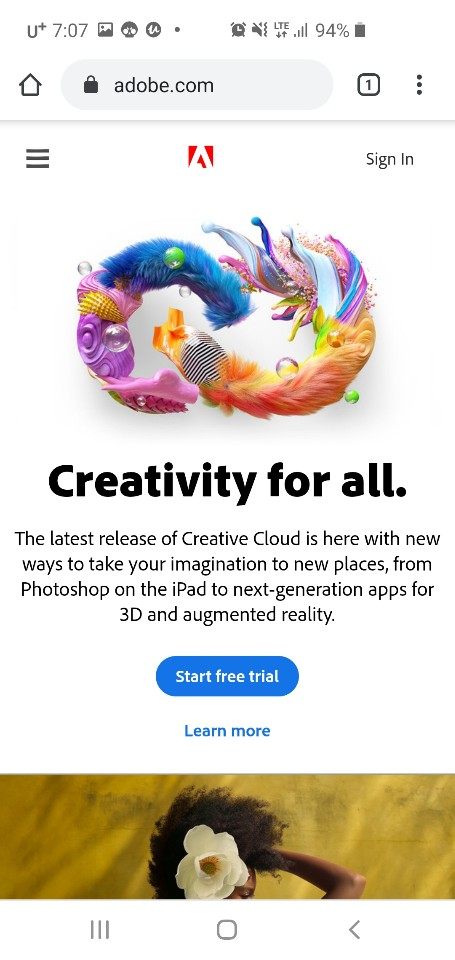

PARC: Proximity
Naver
In naver.com and blizzard.com webpages, I can found great proximity. In Naver webpages items that are related are gathered together so it makes easier to find things that I want to use.
Visual Hierarchy
Adobe
Adobe website shows benefits of Visual Hierarchy. big and colorful images are guiding the direction where should our eyes move. It makes easier to users to navigate the website by using visual hierarchy.
White Space and Clean Design
In google, I think this page is the most well displayed the white space. Since there is no other things than searching bar it clearly gives idea of what google service is. Users can focus on searching information without distraction. Since I love to use google especially while I am doing assignment.